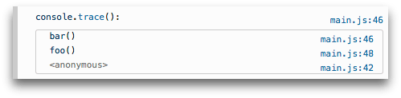

{{APIRef("Console API")}}
The console object provides access to the browser's debugging console (e.g. the Web Console in Firefox). The specifics of how it works varies from browser to browser, but there is a de facto set of features that are typically provided.
The console object can be accessed from any global object. {{domxref("Window")}} on browsing scopes and {{domxref("WorkerGlobalScope")}} as specific variants in workers via the property console. It's exposed as {{domxref("Window.console")}}, and can be referenced as console. For example:
console.log("Failed to open the specified link")
This page documents the {{anch("Methods")}} available on the console object and gives a few {{anch("Usage")}} examples.
{{AvailableInWorkers}}
Note: The actual console interface is defined as all lower case (i.e. not Console), for historical reasons.
false.debug.error().groupEnd().group() this starts with the inline group collapsed requiring the use of a disclosure button to expand it. To move back out a level, call groupEnd().The most frequently-used feature of the console is logging of text and other data. There are four categories of output you can generate, using the {{domxref("console.log()")}}, {{domxref("console.info()")}}, {{domxref("console.warn()")}}, and {{domxref("console.error()")}} methods respectively. Each of these results in output styled differently in the log, and you can use the filtering controls provided by your browser to only view the kinds of output that interest you.
There are two ways to use each of the output methods; you can pass in a list of objects whose string representations get concatenated into one string, then output to the console, or you can pass in a string containing zero or more substitution strings followed by a list of objects to replace them.
The simplest way to use the logging methods is to output a single object:
var someObject = { str: "Some text", id: 5 };
console.log(someObject);
The output looks something like this:
[09:27:13.475] ({str:"Some text", id:5})
You can also output multiple objects by listing them when calling the logging method, like this:
var car = "Dodge Charger";
var someObject = { str: "Some text", id: 5 };
console.info("My first car was a", car, ". The object is:", someObject);
This output will look like this:
[09:28:22.711] My first car was a Dodge Charger . The object is: ({str:"Some text", id:5})
When passing a string to one of the console object's methods that accepts a string (such as log()), you may use these substitution strings:
%o or %O%d or %iconsole.log("Foo %.2d", 1.1) will output the number as two significant figures with a leading 0: Foo 01%s%fconsole.log("Foo %.2f", 1.1) will output the number to 2 decimal places: Foo 1.10Note: Precision formatting doesn't work in Chrome
Each of these pulls the next argument after the format string off the parameter list. For example:
for (var i=0; i<5; i++) {
console.log("Hello, %s. You've called me %d times.", "Bob", i+1);
}
The output looks like this:
[13:14:13.481] Hello, Bob. You've called me 1 times. [13:14:13.483] Hello, Bob. You've called me 2 times. [13:14:13.485] Hello, Bob. You've called me 3 times. [13:14:13.487] Hello, Bob. You've called me 4 times. [13:14:13.488] Hello, Bob. You've called me 5 times.
You can use the %c directive to apply a CSS style to console output:
console.log("This is %cMy stylish message", "color: yellow; font-style: italic; background-color: blue;padding: 2px");
The text before the directive will not be affected, but the text after the directive will be styled using the CSS declarations in the parameter.
You may use %c multiple times:
console.log("Multiple styles: %cred %corange", "color: red", "color: orange", "Additional unformatted message");
The properties usable along with the %c syntax are as follows (at least, in Firefox — they may differ in other browsers):
text-* properties such as {{cssxref("text-transform")}}Note: The console message behaves like an inline element by default. To see the effects of padding, margin, etc. you should set it to for example display: inline-block.
You can use nested groups to help organize your output by visually combining related material. To create a new nested block, call console.group(). The console.groupCollapsed() method is similar but creates the new block collapsed, requiring the use of a disclosure button to open it for reading.
To exit the current group, call console.groupEnd(). For example, given this code:
console.log("This is the outer level");
console.group("First group");
console.log("In the first group");
console.group("Second group");
console.log("In the second group");
console.warn("Still in the second group");
console.groupEnd();
console.log("Back to the first group");
console.groupEnd();
console.debug("Back to the outer level");
The output looks like this:
You can start a timer to calculate the duration of a specific operation. To start one, call the console.time() method, giving it a name as the only parameter. To stop the timer, and to get the elapsed time in milliseconds, just call the console.timeEnd() method, again passing the timer's name as the parameter. Up to 10,000 timers can run simultaneously on a given page.
For example, given this code:
console.time("answer time");
alert("Click to continue");
console.timeLog("answer time");
alert("Do a bunch of other stuff...");
console.timeEnd("answer time");
Will log the time needed by the user to dismiss the alert box, log the time to the console, wait for the user to dismiss the second alert, and then log the ending time to the console:

Notice that the timer's name is displayed both when the timer is started and when it's stopped.
Note: It's important to note that if you're using this to log the timing for network traffic, the timer will report the total time for the transaction, while the time listed in the network panel is just the amount of time required for the header. If you have response body logging enabled, the time listed for the response header and body combined should match what you see in the console output.
The console object also supports outputting a stack trace; this will show you the call path taken to reach the point at which you call {{domxref("console.trace()")}}. Given code like this:
function foo() {
function bar() {
console.trace();
}
bar();
}
foo();
The output in the console looks something like this:

{{Compat}}
console object, that object overrides the one built into Firefox.